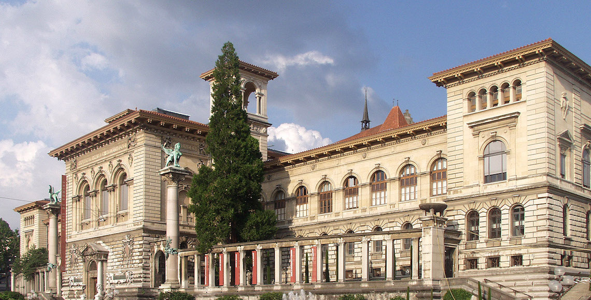

TALKS – Thursday June 4th

Le Palais de Rumine
The magnificent Palais de Rumine will be the scenery of the 1st conference day. The talks will take place on the 3rd floor, in the room “Aula”, usually housing the Parliament meetings. While listening to the speakers, you’ll have the opportunity to admire Louis Rivier’s paintings, famous Swiss painter.
At your arrival, badges will be delivered in the room “Sénat” on the 1st floor. Then, come to the Atrium on the 5th floor; we will be happy to share a coffee&croissant with you from 8:00 to 9:00.
Practical information
Opening hours
The venue will be opened from 8:00 to 18:00. The first talk is at 9:15.
Use Google Maps to find the Palais de Rumine; you can follow the directions for walking, by public transportation or even by car.
- M2: stop at Riponne – M. Béjart
- Bus 1 & 2: stop at Rue Neuve
- Bus 7 & 8: stop at Riponne
WORKSHOPS – Friday June 5th

L’Arsenic
The workshops will take place at l’Arsenic, one of Lausanne most vibrant spots for dance and contemporary theatre.
Opened in 1990 in the old workshops of a professional training college and recently renovated, it’s a perfect place for learning and delighting.
Practical information
Opening hours
The venue will be opened from 8:00 to 18:00. Workshops begin at 9:00.
Address
Rue de Genève 57
1004 Lausanne
You may trust Google Maps to find l’Arsenic. It misses a few shortcuts but you can follow the directions for walking, by public transportation or even by car.
- M1 : stop at Vigie
- Bus 3 & 21: stop at Cécil
- Bus 9 & 17: stop at Chauderon
- Bus 18: stop at EPSIC